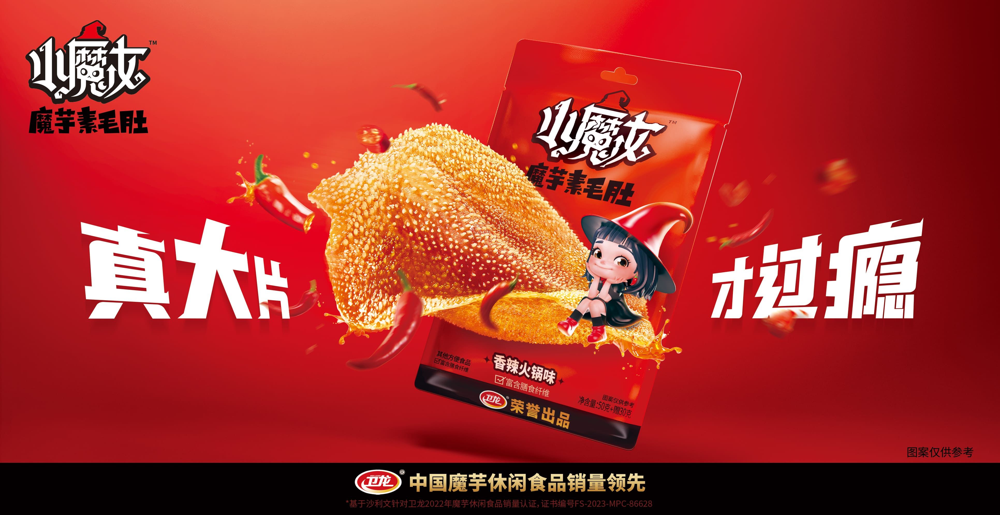

全国统一服务电话:
400-1999-085电子邮件:
weilong@wlspjt.com
copyright © 2020-2023 | all rights reserved
2023-10-27
日前，中国辣味休闲食品国民品牌卫龙再次宣布推新，重磅上市全新魔芋辣味休闲零食“小魔女”！自发明魔芋爽以来，卫龙长期深耕于魔芋休闲零食赛道，不仅主导制定了首个《魔芋即食食品》团体标准，也在该品类的研发创新上不断作出积极尝试。本次上新，又会是卫龙的一次突破性尝试，以行业领导者的站位，助推魔芋休闲零食取得更高质量的发展。
提起魔芋休闲零食，就不能避开卫龙。辣味休闲零食赛道中家喻户晓的卫龙魔芋爽，就是由卫龙发明的。 据相关资料显示，卫龙魔芋爽的研发灵感源自卫龙研发团队一次涮火锅的过程。2009年3月，卫龙研发团队在成都吃火锅时，发现有一道叫做魔芋的素食在火锅里涮过后分外香辣Q弹、爽滑美味，于是便诞生了以魔芋为原料制作零食的想法。在卫龙研发负责人的带领下，团队耗时五年，运用源自四川地道雪魔芋的急冻蒸煮工艺，最终成功造就了爽脆、Q弹的卫龙魔芋爽。
2014年7月，卫龙魔芋爽正式上市，产品首推至今已近十年。十年间，卫龙魔芋爽产品销售区域遍布全国各地，在京东、天猫等多家主流电商平台均是畅销产品，远销全球40个国家和地区，成为卫龙第二个年销售额超10亿元的大单品。据统计，自2014年至2022年累计销售额29亿多元，销量达67亿多件，荣获了沙利文授予的“中国魔芋休闲食品销量领先”市场地位确认证书。
根据里斯咨询的调研显示，卫龙凭借魔芋爽在同品类中的心智渗透率已达78%，远超其他品牌。就在日前，卫龙魔芋爽在淘宝平台上取得了“淘宝100W+”的销售成绩，拿下淘宝首届“金桃子奖”，足以彰显其在市场上的强大影响力。
仅仅取得市场影响力还远远不够，卫龙更关注行业的高质量可持续发展。2020年，卫龙作为主导单位牵头组织了首个《魔芋即食食品》团体标准的制定工作，该标准中明确了魔芋即食食品系以饮用水、魔芋或魔芋粉或魔芋精粉为主要原料，且严格遵守《食品安全国家标准 食品添加剂使用标准》(GB 2760) 规定的食品添加剂的使用原则及国家卫生健康委员会发布的相关公告，不添加防腐剂的同时严格限制添加剂使用。
《魔芋即食食品》团体标准的发布填补了国内魔芋行业的空白，同时对魔芋产品的生产行为进行了有效规范，充分彰显了卫龙从单品发明者到行业引领者的责任意识升级，和对企业社会责任的积极履行。
如果说牵头制定团体标准为行业打下良性发展的基础，那么卫龙“小魔女”的横空出世则将打开魔芋休闲零食赛道的更多想象空间。
据了解，“小魔女”的研发基于卫龙对年轻消费群体的深度洞察，通过精准的受众画像以及魔芋休闲零食在不同消费场景下的应用特征，卫龙此次推新在魔芋爽的工艺基础上，运用低温急冻技术升级了素毛肚的脆感，同时升级了产品切割工艺，“35x35mm”的素毛肚更大片，为消费者创造更加满足的口感体验。
在包装方面，“小魔女”延续了卫龙在设计“霸道熊猫”品牌形象时的IP化思路，精心设计了一款戴着辣椒帽、骑着辣椒形状扫把的“小魔女”二次元品牌形象。鬼马精灵的形象风格可爱又玩趣，不仅让品牌调性更加鲜明，也充分满足了年轻消费者的情感需求和审美倾向。
凭借着自身强大的研发“造血”能力，卫龙一直在以工业化思维最大化复原中国地道美味，形成了卫龙如今“多品类、大单品”的产品策略，在稳健的发展态势下呈现出以调味面制品和辣味蔬菜制品两大品类并驾齐驱的局面，产品结构正朝着更加平衡和稳固的方向发展。
据2022年尼尔森调研显示，在魔芋市场中，卫龙品牌的第一提及、无提示提及与总体认知都显著高于其他品牌。显然，卫龙发明的魔芋爽在市场中已然奠定了良好且坚固的受众认知基础，那么“小魔女”的加入，不仅进一步充实了卫龙自身的产品矩阵，占位了“魔芋素毛肚”的产品类目，也将引领魔芋休闲食品赛道迈向更高品质的发展方向，为市场打开全新的增量机遇。